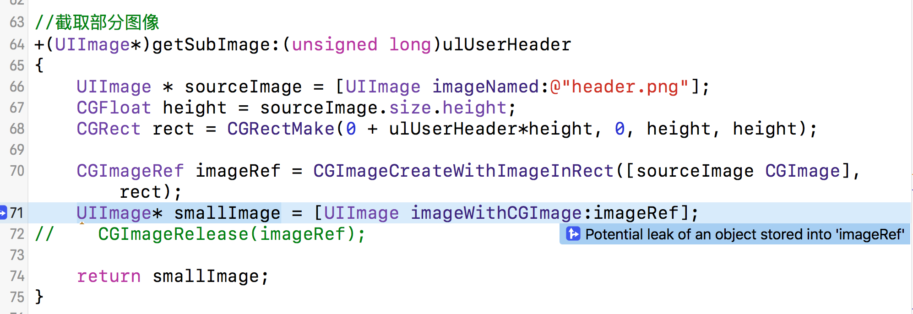
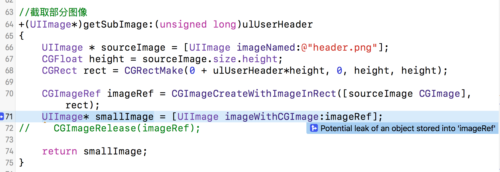
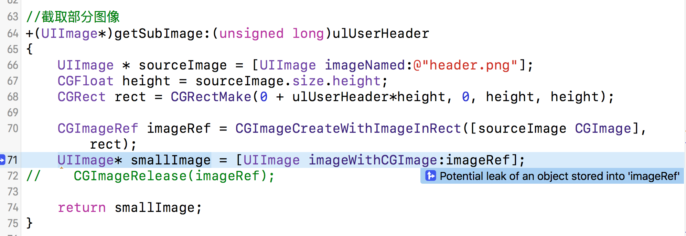
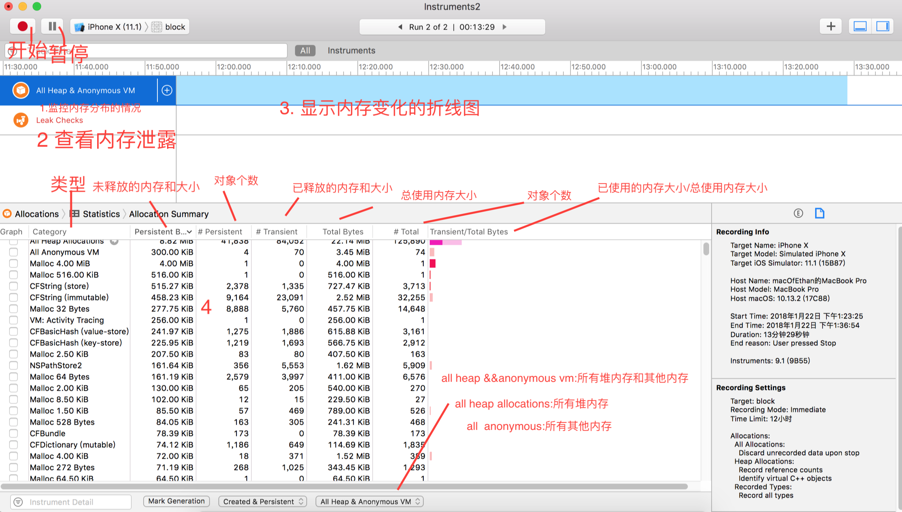
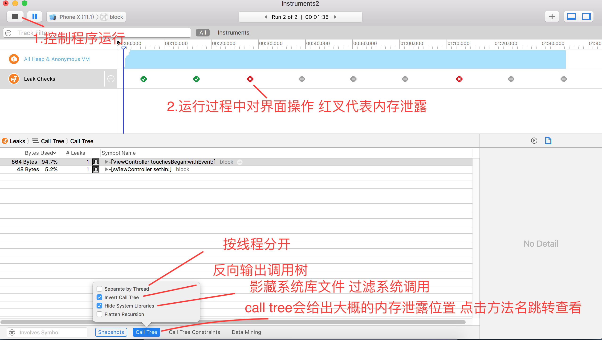
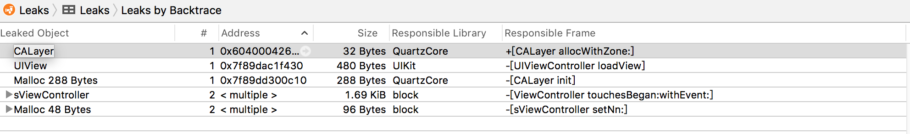
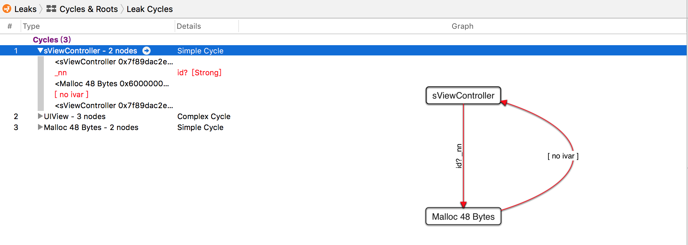

出现的行都是工具发现的疑似泄露点.

这里使用 Analyze 静态分析查找出来的泄漏点,称之为"可疑泄漏点".之所以称之为"可疑泄漏点",是因为这些点未必一定泄露,确认这些点是否泄露, 还要通过 Instruments 动态分析工具的 Leaks 和 Allocations 跟踪模板. Analyze 静态分析只是一个理论上的预测过程.
出现的行都是工具发现的疑似泄露点.

这里使用 Analyze 静态分析查找出来的泄漏点,称之为"可疑泄漏点".之所以称之为"可疑泄漏点",是因为这些点未必一定泄露,确认这些点是否泄露, 还要通过 Instruments 动态分析工具的 Leaks 和 Allocations 跟踪模板. Analyze 静态分析只是一个理论上的预测过程.
iOS内存检测与优化之Analyze静态分析与Instruments动态监测
内存管理方法
Objective_C 有3种内存管理方法:
1. MRR
① 也称为 MRC(Manual Reference Counting, 手动引用计数)
② 由程序员自己负责管理对象生命周期,负责对象的创建和销毁.
2. ARC
① 采用和 MRR 一样的内存引用计数管理方法。
② 在编译时会在适合的位置插入对象内存释放, (如 release, autorelease, 和 retain 等),
③ 程序员不用关心对象释放的问题, 苹果推荐在新项目中使用 ARC, 但在 iOS5之前的系统中不能采用 ARC.
3. GC
① 在Objective_C2.0之后, 内存管理出现了类似于 Java 和 C#的内存垃圾收集技术, 但是垃圾收集与 ARC 一直运行, 垃圾收集是后台有一个线程负责检查已经不再使用的对象,然后释放之.
② 由于后台有一个线程一直运行, 一次会严重影响性能, 这也是 Java 和 C#程序的运行速度无法超越 C++的主要原因.
③ GC 技术不能应用于 iOS 开发, 只能应用于Mac OS X 开发.
内存泄露与内存溢出
1. 内存泄露:指当一个对象或变量在使用完成后没有释放掉, 这个对象一直占用着这部分内存, 直到应用停止.
2. 内存溢出:指程序在申请内存时，没有足够的内存空间供其使用，出现out of memory；比如申请了一个integer,但给它存了long才能存下的数，那就是内存溢出。
3. 影响:内存耗尽,其他应用就无法运行.同时导致我们程序效率越来越低，反应慢，影响用户体验，失去市场竞争能力.
工具
1. 静态分析工具:Analyze,通过Product ->Analyze 菜单项启动- 快捷键: CMD+shift +b.- Analyze主要分析以下四种问题:
1) 逻辑错误：访问空指针或未初始化的变量等；
2) 内存管理错误：如内存泄漏等；
3) 声明错误：从未使用过的变量；
4) Api调用错误：未包含使用的库和框架。
2. 动态分析工具:Instruments,Product ->Profile 菜单项启动- 快捷键: CMD + i.它有很多跟踪模块可以动态分析和跟踪内存, CPU 和文件系统.
Analyze静态分析
1.思路:先使用 Analyze 静态分析查找可疑泄漏点, 再用Instruments动态分析中的 Leaks 和 Allocations 跟踪模板进行动态跟踪分析确认这些点是否泄漏, 或者是否有新的泄漏点出现等.
2.在 Analyze 静态分析结果中, 凡是有图标出现的行都是工具发现的疑似泄露点.

这里使用 Analyze 静态分析查找出来的泄漏点,称之为"可疑泄漏点".之所以称之为"可疑泄漏点",是因为这些点未必一定泄露,确认这些点是否泄露, 还要通过 Instruments 动态分析工具的 Leaks 和 Allocations 跟踪模板. Analyze 静态分析只是一个理论上的预测过程.
动态监测Instruments的Leaks
1. CMD + i 打开

2. 界面简介
选择了 Leaks 模板,默认情况下会添加 Allocations 模板.基本上凡是内存分析都会使用 Allocations 模板, 它可以监控内存分布情况。
① 选中 Allocations 模板,(图1区域),右边的3区域会显示随着时间的变化内存使用的折线图,同时在4区域会显示内存使用的详细信息,以及对象分配情况.
② 点击 Leaks 模板(图中2区域), 可以查看内存泄露情况。如果在3区域有 红X 出现, 则有内存泄露, 4区域则会显示泄露的对象.
检测结果分析
Allocations—内存分配版面的介绍
Leaks和Leaks by Backtrace
这里可以看到那些对象内存泄漏了，泄漏了多少
然后看看Call Tree，因为Call Tree会给我们大概的位置，有时候会给我们精确的位置，不过要看运气了。 然后，再右面选择Invert Call Tree和Hide System Library
Circles & Roots:通过这个我们可以看到详细的ARC引用计数过程
动态监测Instruments的Allocations
Allocations：检测一个进程（选择自己的app）内存分配和使用情况等,
Allocations对app优化非常有用，通常是拿来分析内存增加（不一定是内存泄漏）和app中各部分占用内存问题，当我们得知哪个内存占用比较多，我们直接进行优化即可减少内存占用问题
make generation
这个功能是非常有用的，一般是这样用的：进入一个页面前mark一下，在退出这个页面的时候再mark一下可以比较哪些内容增加了，就可以具体分析哪些内存没有被释放；
Allocation Lifespan
需要记录哪些Allocation
All Allocations：所有的
Created & Persistent：创建且存活的
Created & Destroyed：创建且被销毁的
我们目前只关心存活的，所以我们钩上第二个
Allocation Type
记录的Allocation类型
All Heap & Anonymous VM：所有真实内存和虚拟内存，我通常选这个分析
All Heap Allocations：所有真实内存
All VM Regions：所有分配过的虚拟内存
Call Tree
把列表展示类型切换成Call Trees，能够非常清晰的看到调用树
call tree下的调试功能Separate by Category
按照类别隔开
Separate by Thread
按照线程划分
Call Tree Constraints
对列表中的数据进行过滤，可以是数量和大小
Data Mining
过滤掉你不看的库、符号调用
Dirty Size
Dirty Size：脏数据大小（没办法被重复使用）
Swapped Size：交换空间大小
Resident Size：固定数据大小
动态监测Instruments的Core Animation
FPS
FPS:全称Frames Per Second,其实就是屏幕刷新率，苹果的iphone推荐的刷新率是60Hz， 也就是说GPU每秒钟刷新屏幕60次，这每刷新一次就是一帧frame，FPS也就是每秒钟刷新多少帧画面。 静止不变的页面FPS值是0，这个值是没有参考意义的，只有当页面在执行动画或者滑动的时候，FPS值才具有参考价值，FPS值的大小体现了页面的流畅程度高低，当低于45的时候卡顿会比较明显。
调试注意点:
（1）Core Animation不支持模拟器调试,请使用真机调试。进入Core Animation后选择真机,然后选择应用,点击红点开始跑🏃
（2）最好使用release包测试（release是发布版本，苹果会在release包中做很多优化工作，因此用release包测试出来的性能才是最真实的）。
启动程序点击XCode选择左上角-XCode->Open Developer Tool ->Instruments，打开Instruments再选择CoreAnimation：
Color Blended Layers (图层混合)
这个选项是检测哪里发生了图层混合，先介绍一下什么是图层混合？ 很多情况下，界面都是会出现多个UI控件叠加的情况，如果有透明或者半透明的控件， 那么GPU会去计算这些这些layer最终的显示的颜色，也就是我们肉眼所看到的效果。 例如一个上层Veiw颜色是绿色RGB(0,255,0)，下层又放了一个View颜色是红色RGB(0,0,255)， 透明度是50%，那么最终显示到我们眼前的颜色是蓝色RGB(0,127.5,127.5)。 这个计算过程会消耗一定的GPU资源损耗性能。如果我们把上层的绿色View改为不透明， 那么GPU就不用耗费资源计算，直接显示绿色。混合颜色计算公式：
R(C)=alpha*R(B)+(1-alpha)*R(A) R(x)、G(x)、B(x)分别指颜色x的RGB分量
如果出现图层混合了，打开Color Blended Layers选项，那块区域会显示红色，所以我们调试的目的就是将红色区域消减的越少越好。那么如何减少红色区域的出现呢？只要设置控件不透明即可。
（1）设置opaque 属性为true。
（2）给View设置一个不透明的颜色，没有特殊需要设置白色即可。
如果你在lldb中po打印某个控件，你会发现打印出来的数据中，控件的opaque都是true，因为控件这个属性的默认值都是true，所以第一种方法可以直接忽略掉。使用第二种方法你会发现之前红色的都消除掉了。
label.backgroundColor = [UIColor whiteColor];
label.layer.masksToBounds = YES;
到这里你可能奇怪，设置label的背景色第一行不就够了么，为什么还有第二行？这是因为如果label的内容是中文，label实际渲染区域要大于label的size，最外层多了一个sublayer，如果不设置第二行label的边缘外层灰出现图层混合的红色，因此需要在label内容是中文的情况下加第二句。单独使用label.layer.masksToBounds = YES是不会发生离屏渲染，下文会讲离屏渲染。 注意点：UIImageView控件比较特殊，不仅需要自身这个容器是不透明的，并且imageView包含的内容图片也必须是不透明的，如果你自己的图片出现了图层混合红色，先检查是不是自己的代码有问题，如果确认代码没问题，就是图片自身的问题，可以联系你们的UI眉眉～
Color Hits Green and Misses Red（光栅化）
这个选项主要是检测我们是是否正确使用layer的shouldRasterize属性，shouldRasterize = YES开启光栅化。 什么是光栅化？光栅化是将一个layer预先渲染成位图(bitmap)，再加入到缓存中，成功被缓存的layer会标注为绿色,没有成功缓存的会标注为红色，正确使用光栅化可以得到一定程度的性能提升。
适用情况：一般在图像内容不变的情况下才使用光栅化，例如设置阴影耗费资源比较多的静态内容，如果使用光栅化对性能的提升有一定帮助。
非适用情况：如果内容会经常变动,这个时候不要开启,否则会造成性能的浪费。例如我们在使用tableViewCell中，一般不要用光栅化，因为tableViewCell的绘制非常频繁，内容在不断的变化，如果使用了光栅化，会造成大量的离屏渲染降低性能。
如果你在一个界面中使用了光栅化，刚进去这个页面的所有使用了光栅化的控件layer都会是红色，因为还没有缓存成功，如果上下滑动你会发现，layer变成了绿色。但是如果你滑动幅度较大会发现，新出现的控件会是红色然后变成绿色，因为刚开始这些控件的layer还没有缓存。
注意点：
（1）系统给光栅化缓存分配了一个固定的大小，因此不能过度使用，如果超出了缓存也会造成离屏渲染。
（2）缓存的时间为100ms，因此如果在100ms内没有使用缓存的对象，则会从缓存中清除。
Color Copied Images（图片颜色格式）
Shows images that are copied by Core Animation in blue苹果官方注释被拷贝给CPU进行转化的图片显示为蓝色。
那么这句话怎么理解呢？如果GPU不支持当前图片的颜色格式，那么就会将图片交给CPU预先进行格式转化，并且这张图片标记为蓝色。
那么GPU支持什么格式呢？苹果的GPU只解析32bit的颜色格式，如果使用Color Copied Images去调试发现是蓝色，这个时候你也可以去找你们的UI眉眉了～
知识扩展：32bit指的是图片颜色深度，用“位”来表示，用来表示显示颜色数量，例如一个图片支持256种颜色，那么就需要256个不同的值来表示不同的颜色，也就是从0到255，二进制表示就是从00000000到11111111，一共需要8位二进制数，所以颜色深度是8。通常32bit色彩中使用三个8bit分别表示R红G绿B蓝,还有一个8bit常用来表示透明度（Alpha）。
Color Non-Standard Surface Formats (不标准的表面颜色格式)
Color Immediately（颜色刷新频率）
当执行颜色刷新的时候移除10ms的延迟，因为可能在特定情况下你不需要这些延迟，所以使用此选项加快颜色刷新的频率。不过一般这个调试选项我们是用不到的。
Color Misaligned Images(图片大小)
这个选项可以帮助我们查看图片大小是否正确显示。如果image size和imageView size不匹配，image会出现黄色。要尽可能的减少黄色的出现，因为image size与imageView size不匹配，会消耗资源压缩图片。
Color Offscreen-Rendered Yellow（离屏渲染）
离屏渲染Off-Screen Rendering 指的是GPU在当前屏幕缓冲区以外新开辟一个缓冲区进行渲染操作。
还有另外一种屏幕渲染方式-当前屏幕渲染On-Screen Rendering ，指的是GPU的渲染操作是在当前用于显示的屏幕缓冲区中进行。
离屏渲染会先在屏幕外创建新缓冲区，离屏渲染结束后，再从离屏切到当前屏幕， 把离屏的渲染结果显示到当前屏幕上，这个上下文切换的过程是非常消耗性能的，实际开发中尽可能避免离屏渲染。
触发离屏渲染Offscreen rendering的行为：
（1）drawRect:方法
（2）layer.shadow
（3）layer.allowsGroupOpacity or layer.allowsEdgeAntialiasing
（4）layer.shouldRasterize
（5）layer.mask
（6）layer.masksToBounds && layer.cornerRadius
这里有需要注意的是第三条layer.shouldRasterize ，其实就是本文讲的光栅化，光栅化会触发离屏渲染，因此光栅化慎用。 第六条设置圆角会触发离屏渲染，如果在某个页面大量使用了圆角，会非常消耗性能造成FPS急剧下降，设置圆角触发离屏渲染要同时满足下面两个条件:
layer.masksToBounds = YES;
layer.cornerRadius = 5;
Color Compositing Fast-Path Blue (快速路径)
Places a blue overlay over content that is detached from the compositor.标记由硬件绘制的路径为蓝色，蓝色越多越好。
Flash Updated Regions (重绘区域)
Colors regions on your iOS device in yellow when those regions are updated by the graphics processor. 这个选项会对重绘的内容高亮成黄色,重绘就是指使用Core Graphics绘制，绘制会损耗一定的性能，因此重绘区域应该越小越好.